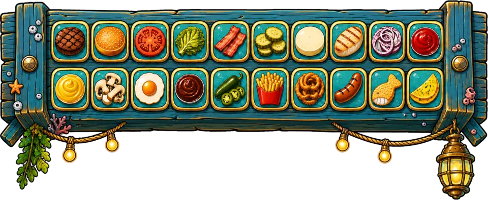

नौ मोड
Stack Rush, Press Rush, Order Rush, Current Sort, Orbit Stack 3D, Stack 3D, Round 3D, Balance Tower 3D और Slice & Fit 3D, मोड चयन मेनू से चुनें।
स्टैक करने के लिए टैप करें। ऑर्डर सर्व करें।
बढ़ते बर्गर पर सामग्री की परतें गिराएँ, उन्हें सीधा रखें और बनाते समय रेसिपी मिलाएँ। नौ मोड बताते हैं कि स्टैक कैसे चलता है और आप किसका पीछा कर रहे हैं।
नौ मोड, 20 सामग्री और 166 रेसिपी का कैटलॉग Unity प्रोजेक्ट में बने हैं। अभी कोई सार्वजनिक बिल्ड नहीं है।


स्टैक के ऊपर एक परत सरकती है और आप उसे गिराने के लिए टैप करते हैं। स्टैकिंग मोड में आप ट्रे से अगली सामग्री चुन सकते हैं।
ओवरहैंग काट दिया जाता है, इसलिए लापरवाह ड्रॉप से स्टैक संकरा रह जाता है। लगभग केंद्र में गिराया गया ड्रॉप Perfect गिना जाता है और कॉम्बो बनाता है।
रेसिपी से मेल खाती परतें उसे पूरा करती हैं। Order Rush में हर पूरा ऑर्डर समय जोड़ता है और गलत सामग्री समय घटाती है।
Stack Rush, Press Rush, Order Rush, Current Sort, Orbit Stack 3D, Stack 3D, Round 3D, Balance Tower 3D और Slice & Fit 3D, मोड चयन मेनू से चुनें।
Stack Rush में वैकल्पिक Expert मॉडिफ़ायर है, जो परतों को दो अक्षों पर घुमाता है।
पैटी, बन, टमाटर, बेकन, सॉस, फ़्राइज़ और बहुत कुछ, दो से सात सामग्री के मेल वाले रेसिपी कैटलॉग के साथ।
हर पूरे हुए ऑर्डर के साथ शिफ़्ट टाइमर बढ़ता है और गलत सामग्री पर घटता है।
स्टैक बढ़ने के साथ पानी के नीचे और आसमानी रसोई की पृष्ठभूमियाँ सरकती हैं, साथ में मेल खाती सामग्री ट्रे और UI कला।
डिवाइस पर सेव प्रोफ़ाइल दैनिक और साप्ताहिक चुनौतियों और अनलॉक की गई सामग्री का हिसाब रखती है।
अभी रिलीज़ की तारीख नहीं है। ये प्रोजेक्ट के लक्ष्य हैं, वादे नहीं।
Unity प्रोजेक्ट से कला और इंटरफ़ेस एसेट, गेमप्ले कैप्चर नहीं।

बर्गर थीम वाला टैप-टू-स्टैक आर्केड गेम। आप सामग्री की परतें स्टैक पर गिराते हैं, उन्हें सीधा रखते हैं और रेसिपी पूरी करते हैं। इसमें नौ मोड हैं, जिनमें समय वाले ऑर्डर रश और 3D वेरिएंट शामिल हैं। वही एक-टैप आइडिया चलता है Sandwich Stack और Stack Tower.
अभी नहीं। Burger Stack एक प्रोटोटाइप है, जिसकी कोई सार्वजनिक बिल्ड और रिलीज़ की तारीख नहीं है। Android और iOS इसके लक्षित प्लेटफ़ॉर्म हैं।
Burger Stack को WillowinWorlds बनाता है, एक स्वतंत्र मोबाइल गेम स्टूडियो (इसे देखें मुख्य गेम). इस पेज पर दिए सोशल चैनलों पर WillowinWorlds को फ़ॉलो करें, या ईमेल करें willowinworlds@gmail.com Burger Stack पर अपडेट माँगने के लिए।
वोटिंग स्टूडियो के चैनलों पर खुलेगी। WillowinWorlds को फ़ॉलो करें और इसमें शामिल हों।